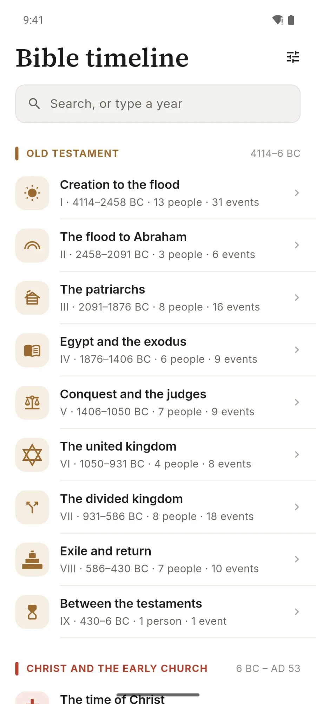
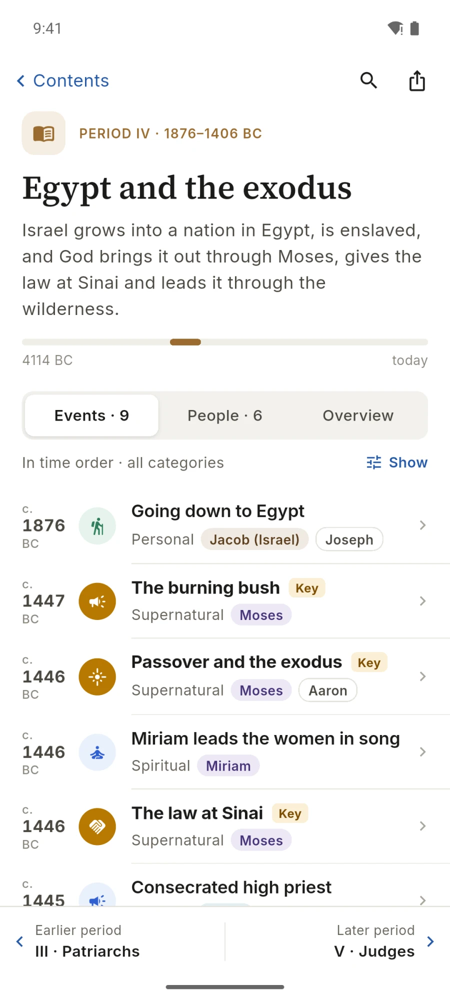
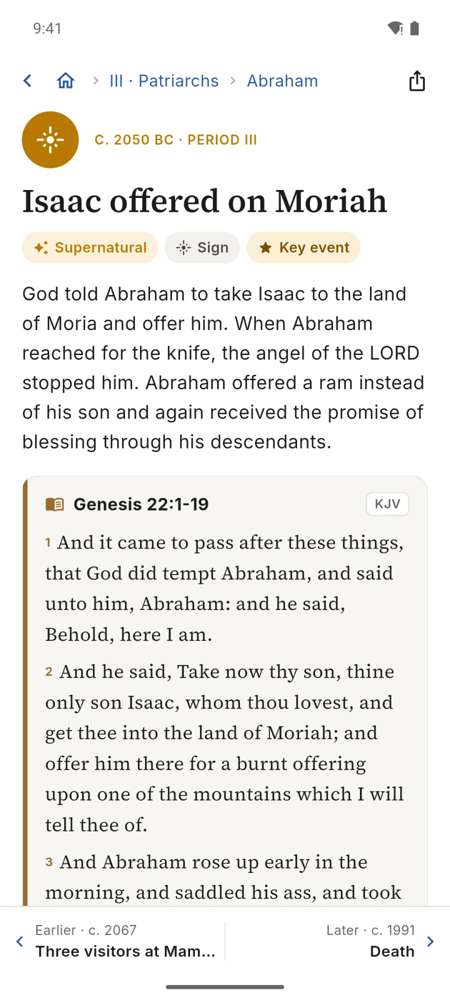

Misia Biblická časová os
18 období, 69 osôb a 235 udalostí
Biblické a kresťanské dejiny v jednej časovej osi, od stvorenia po dnešok, s miestami Písma, podrobnými textami a obrázkami. Všetko je uložené v telefóne a funguje offline, bez internetu.
Android APK
Aktuálna verzia: 1.0.0 (1)
Pri inštalácii APK povoľte „Inštalovať z neznámych zdrojov“. Prihlásenie nie je potrebné.
Web a podpora
Snímky obrazovky





